Punda
2016 - 2017 / BI / UX / UI
Punda is a learning platform that helps students studying computer programming and English as English is needed to understand programming languages and documents from online programmer communities. This was my first project as a UI designer which gave me ample opportunities to learn about mobile user interface design. The home screen shows a ‘problem bot’ that users can ask questions. If there is an answer to a question in the bot’s database, it provides the answer instantly to the user. If not, the bot contacts one of Punda’s teachers to solve the problem and alerts the user once it has the answer. The user can scan whatever text they are reading using optical character recognition (OCR) technology and make vocab cards from the words they extracted from the text.
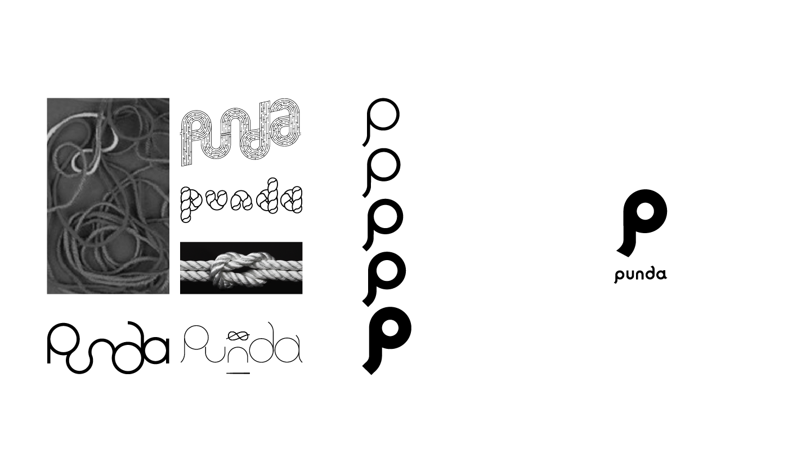 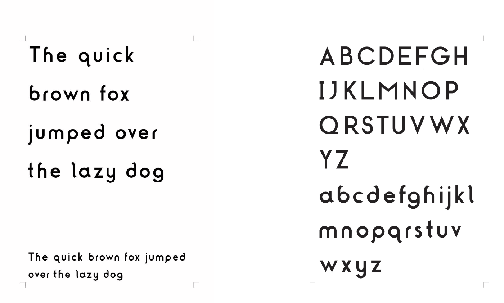The word ‘punda’ means ‘to solve’ ,’untie’ or ‘untangle’ in Korean. I tried the form of labyrinth, rope, and untangling knot to deliver this meaning visually, and simplyfied it.
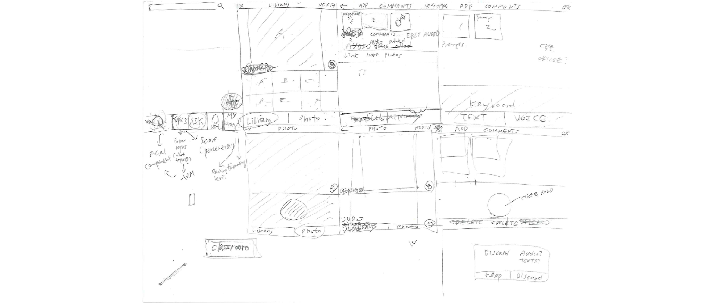 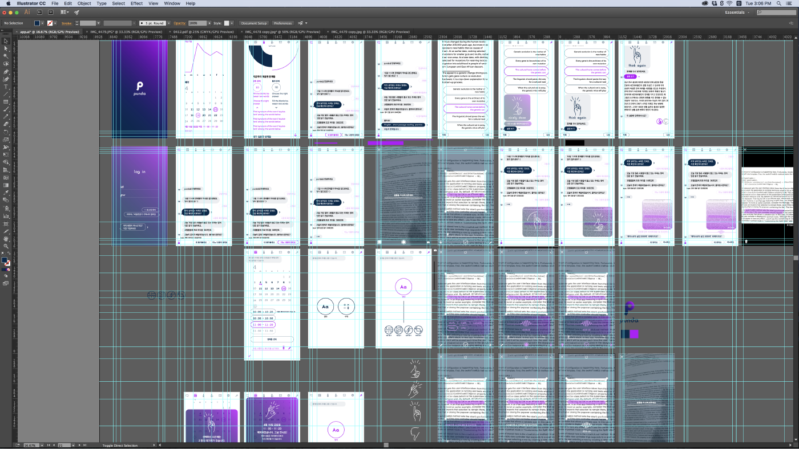 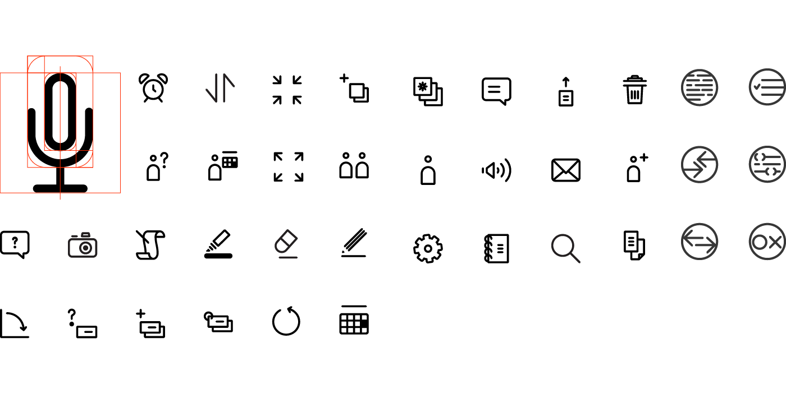 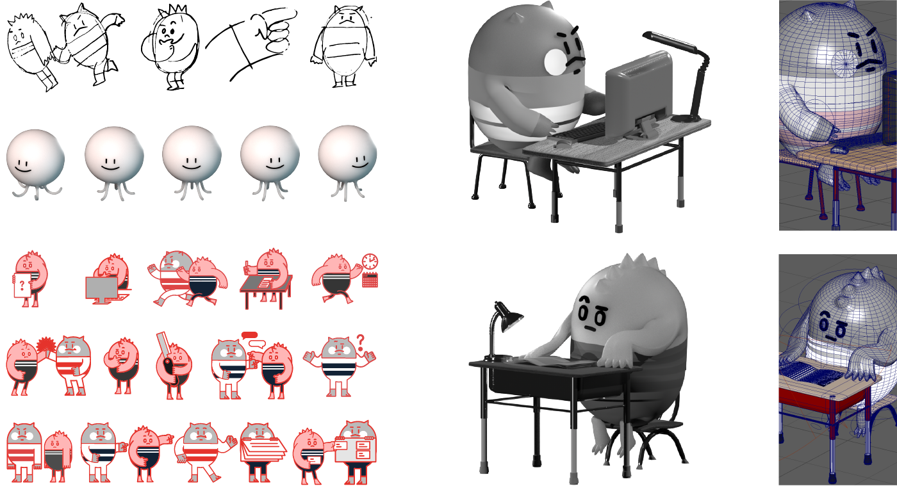Landing & Sign in page
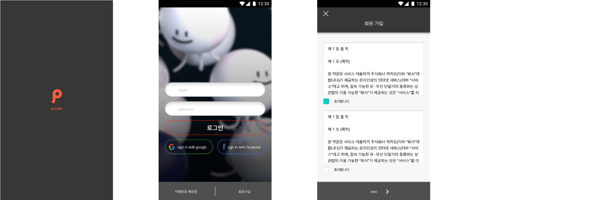Appointment
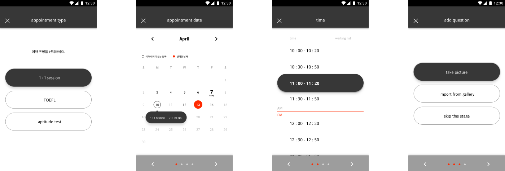 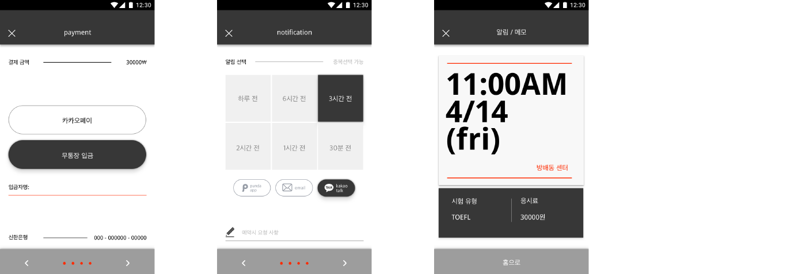Making vocab lists & using it
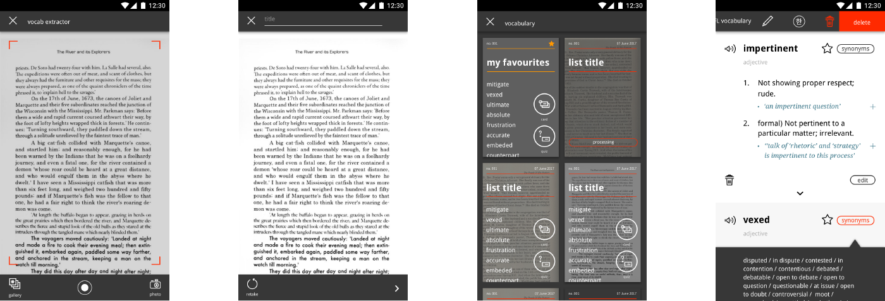 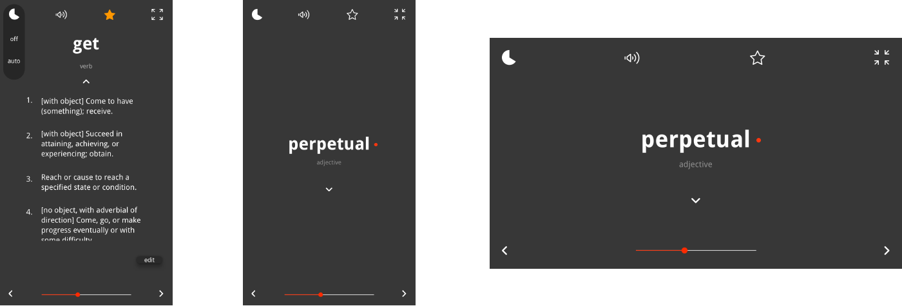Problem Solving
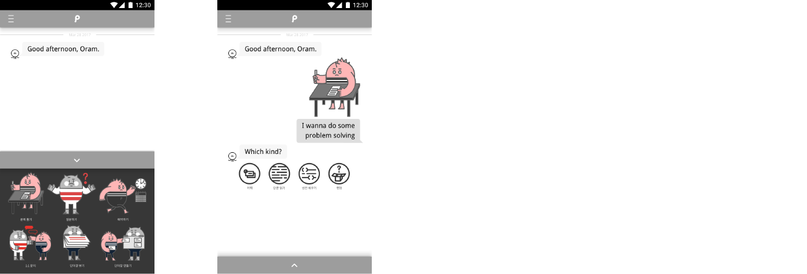 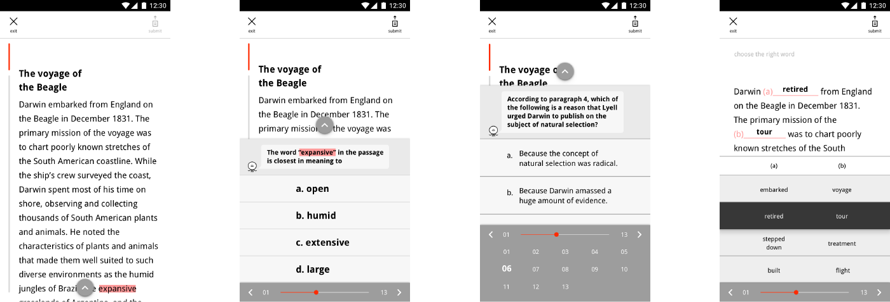 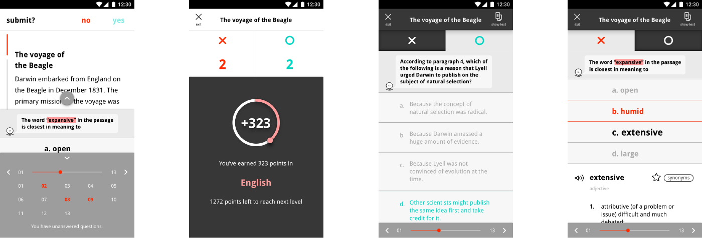Asking Questions
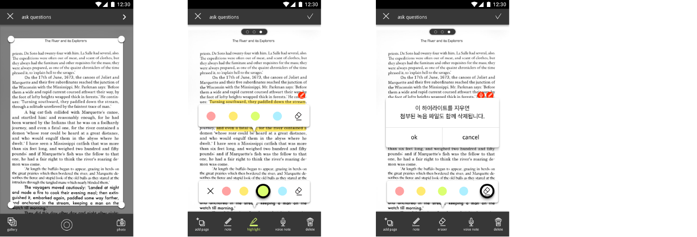 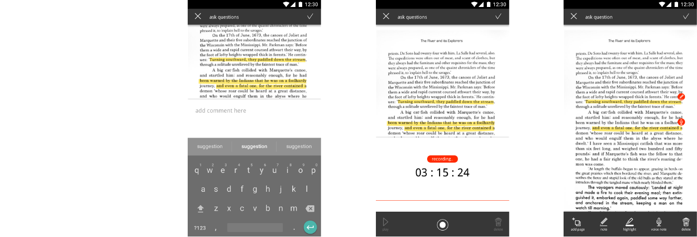Homeworks & Progress
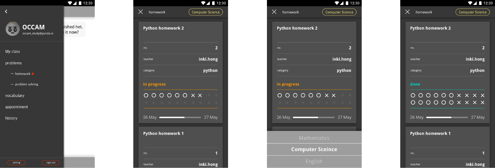